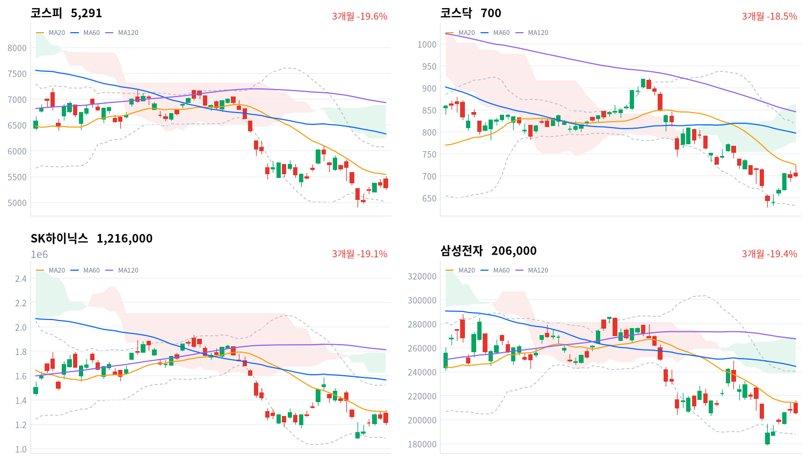

젠슨 황 엔비디아 CEO의 사임이 확정된 뒤 처음 열린 한국 장에서 코스피는 오전에 5,500선을 넘었다가 정오 무렵 하락으로 돌아섰다. 외국인 매도가 SK하이닉스에 몰렸다는 보도가 나왔고, 대만·일본 증시가 오른 날 코스피만 약했다.
은행 업종은 11개 종목이 모두 올라 하락이 시장 전체로 번지지는 않았다. 11월 16일 외국인이 다시 순매수로 돌아서는지가 다음 방향을 정한다.
엔비디아 CEO 교체가 확정된 첫 세션에서 한국은 오전 반등을 지키지 못했다. 코스피는 장 초반 5,500선을 넘었지만 정오 무렵 하락으로 돌아섰고, 외국인은 4거래일 만에 5,449억원을 순매도했다(당일 잠정). 매도가 SK하이닉스에 몰린 같은 시간에 은행 업종은 11개 종목이 모두 올랐다.
장 마감 뒤 보도는 오후 반전을 젠슨 황 사임의 여파로 추정하면서, 뚜렷한 새 악재 없이 AI 관련 불확실성과 매크로 부담이 수급 변동성을 키웠다고 설명했다. 키움증권 한지영 연구원은 엔비디아 사태가 AI 생태계 전반의 훼손보다 수요 분산 가능성을 시사하고 주가에 악재가 상당 부분 선반영됐다고 판단하며, 국내 증시는 업종 차별화 장세 속에서 하단이 제한될 것으로 전망했다. 새 악재가 없었다는 데는 동의한다. 그러나 엔비디아 악재에 아시아 반도체가 함께 반응했다는 설명은 같은 날 대만가권이 1.35% 오른 것과 맞지 않는다. 코스피만 아시아 4개 지수 평균보다 0.92%포인트 약했으므로, 하락의 이유는 엔비디아 뉴스 자체보다 한국 시장 안의 외국인 매도에서 찾아야 한다. 시장이 이 하락에 무엇을 기대했는지 잴 가격 자료는 없다.
한국 고유의 매도 압력이 소진되고 있다는 지난 판단은 이 반전으로 약해졌다. 다만 하락은 넓지 않았다. 은행·증권·통신이 폭넓게 올랐고 코스닥은 0.45% 올라, 이날 매도는 시장 전체보다 SK하이닉스를 중심으로 한 AI 하드웨어 대형주에 집중됐다고 본다. 외국인이 판 날 은행·증권이 오른 조합은 지수 안에서 자금이 변동성이 낮은 업종으로 옮겨 갔다는 해석과 부합하지만, 업종별 순매매 자료가 없어 확인하지는 못한다. 다른 설명은 11월 5~9일 급락 뒤의 되돌림이 20일 이동평균(5,542) 아래에서 끝나고 외국인 매도가 다시 시작됐다는 것이다. 두 설명은 11월 16일 외국인 순매수 방향과 코스피가 이날 저가 5,259를 지키는지, 11월 19일까지 SK하이닉스가 삼성전자 대비 약세를 넓히는지로 구분된다.
새로 제안할 상품은 없다. 반도체·AI 하드웨어 테마는 한국에서 하루 더 약해졌지만 원인이 확인되지 않았고 대만은 올라, 이날 움직임만으로 테마 판단을 바꾸기는 이르다. 금융 테마는 은행 업종이 전 종목 오르며 가격 흐름이 좋아졌지만 이를 설명할 새 이익·배당 자료는 나오지 않았다. 그래서 하루 방어 매수인지 재평가인지는 11월 20일까지 KB금융이 코스피 대비 우위를 지키는지로 확인한다. 가장 가까운 결정적 일정은 11월 16일 정규장의 외국인 코스피 순매수 방향이다.
코스피가 11월 13일 기준 볼린저 밴드 하단 5,012 아래에서 마감하면, 이날 하락이 SK하이닉스 중심의 AI 하드웨어 대형주 매도에 그쳤다는 오늘 판단을 철회한다. 그 경우 11월 5~9일 급락 뒤의 되돌림이 끝나고 외국인 매도가 다시 시작됐다는 설명을 우선 설명으로 본다.
출처: 파이낸셜뉴스, 네이트(마감 시황), 강원도민일보
11월 12일 미국 세션에서 S&P500은 0.35%, 나스닥은 0.39%, 다우는 0.36% 내렸다. 젠슨 황 CEO 사임이 확정된 엔비디아는 장 초반 13% 넘게 밀렸다가 4.34% 내린 채 마감했다는 보도가 나왔다. 아시아는 엇갈렸다. 대만가권(+1.35%)과 닛케이(+0.53%)는 올랐고 상해종합(-0.59%)과 항셍(-1.55%)은 내렸다. 코스피는 네 지수 평균(-0.06%)보다 0.92%포인트 약했다.
코스피는 전일 종가 5,342.73보다 2.05% 높은 5,452.41에서 출발했다. 미국 지수가 내린 뒤의 갭 상승으로, 악재가 상당 부분 반영됐다는 판단에 저가 매수가 들어왔다는 해설이 나왔다. 한국 정규장 동안 S&P500 선물은 0.35%, 나스닥 선물은 0.57% 내렸다.
코스피는 고가 5,504.44와 저가 5,259.09 사이를 오간 뒤 하루 범위의 아래쪽 13% 지점에서 마감했다. 코스닥도 고가 725.81에서 밀려 저가 부근인 699.66으로 끝났지만 전일보다는 높았다. 원화는 주식이 밀린 오후에도 장 초반 수준까지 약해지지 않았다.
오전 상승을 외국인과 기관의 매수와 반도체 대형주 강세가 끌었고, 오후 반전은 외국인이 순매도로 돌아서며 시작됐다는 보도가 나왔다. 하락은 SK하이닉스·삼성전기·SK스퀘어 같은 AI 하드웨어 대형주와 실적이 부진한 한국전력에 몰렸고, 은행·증권·통신·정유는 올랐다. 장중 투자자별 흐름과 시간외 거래 자료는 없어 정오 반전을 어느 주체가 만들었는지는 가리지 못한다.
출처: 이투데이, 세이프머니, 경북도민일보, 뉴스토마토, 파이낸셜뉴스, 비즈니스코리아
코스피는 0.98% 내린 5,290.53, 코스닥은 0.45% 오른 699.66으로 마감했다. 코스피는 2거래일 연속 내렸고, 코스닥은 하루 만에 반등해 두 지수가 엇갈렸다.
| 지수 | 종가 | 등락률 | 시가 | 고가 | 저가 | 전일 종가 |
|---|---|---|---|---|---|---|
| 코스피 | 5,290.53 | -0.98% | 5,452.41 | 5,504.44 | 5,259.09 | 5,342.73 |
| 코스닥 | 699.66 | +0.45% | 705.96 | 725.81 | 697.69 | 696.53 |
장중 고점은 20일 이동평균(5,542) 바로 아래였다. 코스피는 그 앞에서 되밀려 정오 무렵부터 빠르게 밀렸고, 마감 종가는 고가보다 3.89% 낮다.
| 주체 | 순매수(억원) |
|---|---|
| 개인 | +136 |
| 외국인 | -5,449 |
| 기관 | +4 |
| 주체 | 순매수(억원) |
|---|---|
| 개인 | -531 |
| 외국인 | -792 |
| 기관 | +1,263 |
코스피를 끌어내린 매도는 외국인에게서 나왔다. 외국인은 5,449억원을 순매도해(전일 4,123억원 순매수, 당일 잠정) 4거래일 만에 팔았고, 앞선 3거래일 순매수 합계 1조5,291억원의 3분의 1 남짓을 하루에 되판 셈이다. 개인(136억원)과 기관(4억원)은 순매수했지만 규모는 거의 없었다. 장 마감 뒤 보도 집계는 외국인 순매도를 5,505억~7,034억원으로 이 값보다 크게 잡아, 확정치에서 숫자가 달라질 수 있다. 전일 값도 이날 다시 받은 잠정치라 지난 글의 값(외국인 3,674억원 순매수)과 다르다.
외국인 매도는 SK하이닉스에 몰렸다. 외국인이 SK하이닉스를 약 4,714억원 순매도해 종목 순매도 1위였다는 보도가 나왔다. 종목별 투자자 매매 자료가 없어 이 수치는 확인하지 못했지만, 보도대로라면 이날 외국인 순매도의 대부분이 한 종목에서 나왔다.
코스닥에서는 외국인이 792억원을 순매도해(전일 3,547억원 순매도) 7거래일째 팔았지만 규모는 줄었다. 기관이 1,263억원을 순매수해(전일 420억원 순매수) 지수를 끌어올렸다.
장중 누적 수급과 프로그램 매매는 받을 수 있는 자료가 없어 싣지 않는다.
출처: 파이낸셜뉴스, 시사저널e, SBS Biz
| 순위 | 종목/ETF | 구분 | 거래대금 | 비고 |
|---|---|---|---|---|
| 1 | SK하이닉스 | 개별주 | 3.92조원 | - |
| 2 | 삼성전자 | 개별주 | 2.61조원 | - |
| 3 | 반도체 테마 ETF | 테마·롱 | 1.74조원 | 29종 합산 |
| 4 | 삼성전기 | 개별주 | 0.69조원 | - |
| 5 | 삼성전자우 | 개별주 | 0.59조원 | - |
| 6 | SK스퀘어 | 개별주 | 0.49조원 | - |
| 7 | KODEX CD금리액티브(합성) | 단기금리·현금성 | 0.44조원 | - |
| 8 | 한진칼우 | 개별주 | 0.30조원 | - |
| 9 | NAVER | 개별주 | 0.28조원 | - |
| 10 | SK하이닉스 레버리지 | 단일종목 레버리지·롱 | 0.24조원 | 5종 합산 |
단위 백만원 원본을 조 단위로 환산했다. 같은 기초자산 ETF는 방향별로, 같은 테마 섹터 ETF는 테마별로 묶고 지수·해외 ETF는 제외했다.
거래는 내린 반도체 대형주에 몰렸다. SK하이닉스(3.92조원)와 삼성전자(2.61조원)가 상위 10개 합계의 58%를 차지했고, 반도체 테마 ETF 29종 합산(1.74조원)이 3위였다. 거래대금이 몰린 두 메모리 대형주의 주가는 함께 내려, 거래가 많았다는 사실만으로는 반도체에 돈이 들어왔는지 나갔는지 말할 수 없다. SK하이닉스가 3.03% 내린 날 SK하이닉스 단일종목 레버리지 ETF 5종에도 0.24조원이 거래됐지만, 투자자별 자료가 없어 누가 어느 방향으로 거래했는지는 알 수 없다.
반도체 밖에서는 15.41% 급락한 한진칼우(0.30조원)가 8위에 올라, 지분 경쟁 기대로 급등했던 우선주에서 거래가 크게 일었다.
코스피 하락은 업종 대부분이 아니라 반도체와 일부 대형주에서 나왔다. 은행 업종(+3.48%)은 11종목이 모두 올랐고, 증권(+2.69%)은 39종목 가운데 29종목, 석유와가스(+1.44%)는 19종목 가운데 17종목이 올랐다. 대표 ETF 기준 12개 섹터 가운데 은행(+3.20%)·증권(+2.64%)·건설(+1.88%) 등 6개가 올랐고, 방산(-2.14%)이 가장 약했으며 반도체는 0.84% 내렸다.
상승률만 높은 업종도 있었다. 창업투자(+4.42%)는 89종목 가운데 37종목만 올라 개별 종목의 급등이 끌었다. 항공사(-0.67%)는 9종목 가운데 오른 종목이 없었다. 반도체는 1주 기준으로는 여전히 12개 섹터 가운데 가장 강하지만(+15.36%), 1개월 기준으로는 12.27% 내린 상태다.
SK하이닉스는 장중 5% 넘게 올랐다가 3.03% 내린 1,216,000원에 마감했고, 삼성전자는 0.96% 내렸다. 젠슨 황 사임의 여파일 수 있다는 추정 보도만 있고 회사 고유의 새 악재는 확인되지 않았다. SK하이닉스는 이날 공매도 거래대금 1위였다는 보도도 나왔다.
신한지주(+5.65%)와 KB금융(+4.74%)이 크게 올랐고 하나금융지주도 3.40% 올랐다. 반도체·AI 기술주 변동성이 커지자 안정적인 금융주로 매수가 들어왔다는 해석이 보도됐지만, KB금융 상승을 이끈 특정 호재는 확인되지 않았다는 보도도 있다.
한진칼우는 15.41% 급락했다. 한국거래소가 이 종목이 투자위험종목으로 지정되면 매매거래를 정지할 수 있다고 예고한 날이다. 호반건설 측이 한진칼 보통주 20.69%를 확보한 뒤 지분 경쟁 기대로 우선주가 급등했는데, 의결권이 없는 우선주는 경영권 경쟁에서 의미가 없다는 지적이 나왔다. 한진칼 보통주는 0.25% 올랐다.
NAVER는 5.12% 내렸다. 확인된 재료는 없다.
이수페타시스는 5.23% 오른 88,500원에 마감했다. 미래에셋증권이 내년 AI 서버용 기판 수요 증가와 구글 TPU 공급 확대 기대를 거론했고, 회사가 대구시·달성군과 신규 공장 투자협약을 맺었다는 보도가 나왔다. 공시 없는 급등이라 단기 과열을 경계하는 시각도 있다.
묶음 밖에서는 한국전력이 9.79% 급락했다. 3분기 영업이익이 1조6,441억원으로 전년보다 70.9% 줄어 시장 예상을 밑돌았고, DS투자증권(3만3천원→3만1천원)과 NH투자증권(5만5천원→4만4천원)이 목표주가를 낮췄다는 보도가 나왔다. 금호건설은 3분기 영업이익 222억원(+44.2%)을 공시한 뒤 29.90% 올라 상한가로 마감했다. 두산(-8.55%)은 확인된 재료가 없다.
출처: 강원도민일보, 탑스타뉴스, 비즈니스포스트, 아이뉴스24, 재경일보, 헤럴드경제, 글로벌이코노믹, 비건뉴스, 아주경제
국고채 금리는 주식과 달리 위험 회피 쪽으로 움직이지 않았다. 10년물은 6.4bp 오른 4.001%로 4%대에 올라섰고, 3년물은 3.0bp 오른 3.759%로 마감했다.
| 지표 | 금리 | 전일比(bp) | 기준일 |
|---|---|---|---|
| 국고채 3년 | 3.759% | +3.0 | 2026-11-13 |
| 국고채 10년 | 4.001% | +6.4 | 2026-11-13 |
| CD 91일 | 3.37% | 0.0 | 2026-11-13 |
| 회사채 AA- 3년 | 4.434% | +2.7 | 2026-11-13 |
| 한국은행 기준금리 | 3.00% | 0.0 | 2026년 10월 기준 |
장기물이 더 올라 커브가 가팔라졌다. 10년물과 3년물의 금리차는 24.2bp로 3.4bp 넓어졌지만, 여전히 최근 2년(533거래일) 가운데 좁은 쪽 24% 안에 있다. 유가 상승과 미국 국채 약세, 외국인의 10년 국채선물 3,254계약 순매도가 금리를 밀어 올렸다는 보도가 나왔다. CD 91일 금리는 그대로여서, 이날 상승은 단기 정책금리 기대보다 장기 구간에 몰렸다.
회사채 AA- 3년물은 2.7bp 올라 국고채 3년물보다 덜 올랐고, 두 금리의 차는 67.5bp로 0.3bp 좁혀졌다. 이 금리차는 최근 2년(533거래일) 가운데 넓은 쪽 16% 안에 있어 기업이 돈을 빌리는 비용은 여전히 높은 수준이다. 주식시장의 오후 반전이 신용 금리차를 넓히는 쪽으로 번지지는 않았다.
국고채 10년 4.001%, 3년 3.759%(11월 13일): (4.001 − 3.759) × 100 = 24.2bp. 11월 12일 10년 3.937%, 3년 3.729%: 20.8bp. 변화 +3.4bp(= 6.4bp − 3.0bp).
출처: 이투데이, 스페셜타임스
| 미국 참조 지수 | 구분 | 관측 | 등락률 | 업종 내 상승 비율 | 기준일 |
|---|---|---|---|---|---|
| 반도체·AI 하드웨어 | 종목 | SK하이닉스 | -3.03% | – | 11/13 |
| 반도체·AI 하드웨어 | 종목 | 삼성전자 | -0.96% | – | 11/13 |
| 반도체·AI 하드웨어 | 지수 | 대만가권 | +1.35% | – | 11/13 |
| 전력망 | 업종 | 전기장비 | -0.06% | 69% | 11/13 |
| 전력망 | 업종 | 전기제품 | -0.61% | 47% | 11/13 |
| 전력망 | 종목 | HD현대일렉트릭 | -1.19% | – | 11/13 |
| 전력망 | 종목 | LS ELECTRIC | -0.96% | – | 11/13 |
| 전력망 | 종목 | 효성중공업 | -1.63% | – | 11/13 |
| 방산 | 종목 | 한화에어로스페이스 | -1.99% | – | 11/13 |
| 방산 | 종목 | LIG디펜스앤에어로스페이스 | -3.70% | – | 11/13 |
| 산업재 | 업종 | 기계 | +1.39% | 63% | 11/13 |
| 산업재 | 업종 | 조선 | +0.66% | 39% | 11/13 |
| 산업재 | 종목 | HD현대중공업 | +1.31% | – | 11/13 |
| 산업재 | 종목 | 한화오션 | +0.62% | – | 11/13 |
| 산업재 | 종목 | 삼성중공업 | +0.30% | – | 11/13 |
| 금속·광업 | 업종 | 철강 | 0.00% | 53% | 11/13 |
| 금융 | 업종 | 은행 | +3.48% | 100% | 11/13 |
| 금융 | 업종 | 증권 | +2.69% | 74% | 11/13 |
| 금융 | 종목 | KB금융 | +4.74% | – | 11/13 |
| 금융 | 종목 | 신한지주 | +5.65% | – | 11/13 |
| 소프트웨어 | 업종 | 소프트웨어 | +0.76% | 50% | 11/13 |
| 소프트웨어 | 업종 | IT서비스 | +1.23% | 56% | 11/13 |
| 소프트웨어 | 종목 | NAVER | -5.12% | – | 11/13 |
| 소프트웨어 | 종목 | 카카오 | 0.00% | – | 11/13 |
| 에너지 | 업종 | 석유와가스 | +1.44% | 90% | 11/13 |
| 일본 | 지수 | 닛케이 | +0.53% | – | 11/13 |
| 중국 | 지수 | 항셍 | -1.55% | – | 11/13 |
| 중국 | 지수 | 상해종합 | -0.59% | – | 11/13 |
원/달러는 한국장 시간대 장 초반 고점에서 내려온 뒤 1,330원대 안에서 움직였고, 주식이 오후에 밀릴 때도 장 초반 고점을 다시 넘지 않았다. 해외주식 펀드의 대기 자금이 달러를 사는 비용은 엔비디아 악재와 외국인 순매도에도 크게 오르지 않은 셈이다. 장 시작 전 1,340원대 재진입 시도를 예상한 외환 전망도 있었지만 그 수준에는 닿지 않았다.
반도체는 엔비디아 CEO 교체 뒤 첫 아시아 세션에서 시장마다 다르게 움직였다. 대만가권은 1.35% 올랐고 SK하이닉스는 3.03% 내려, 아시아는 엔비디아 경영진 교체를 AI 하드웨어 수요 전체의 문제로 받아들이지 않았고 매도는 한국 메모리에 몰렸다. 전력망은 전날과 달리 따로 움직이지 않았다. 효성중공업(1.63%)·HD현대일렉트릭(1.19%)·LS ELECTRIC(0.96%)이 코스피와 비슷한 폭으로 내렸다. 둘 다 아시아가 엔비디아 뉴스와 전날 미국장에 반응한 것일 수 있어, 미국 정규장에서 반도체주와 전력기기주가 어떻게 움직이는지가 이 차이가 아시아만의 것인지를 보여 준다.
출처: 외환브리핑
이재명 대통령이 11월 13일 한국거래소에서 연 「신뢰받는 자본시장」 간담회에서 관계 부처 고위급 전담 기구 구성을 지시하고, 금융위원회와 거래소에 신뢰 회복 구체안을 신속히 마련하라고 주문했다는 보도가 나왔다. 중대범죄수사청에는 금융시장 불공정거래 단속과 인력 확충을 지시했고, 의무공개매수는 소수주주 보호와 인수합병 장애 사이에서 현장 의견을 들으라고 했다. 퇴직연금 사업자 선정에서 노동자 선택권이 보장되는지도 점검하라고 했다.
불공정거래 단속이 강해지고 의무공개매수·중복상장 규율이 바뀌면, 소수주주가 받는 몫이 커져 지주사와 주주환원 업종의 할인 폭이 줄어들 수 있다. 다만 이날은 방향 제시에 그쳤고 금융주 직접 조치는 없었다. 은행·증권이 함께 올랐지만 보도는 그 상승이 간담회 때문인지 확인하지 않았고, 시장 반응을 두고는 간담회 효과가 무색했다는 평가가 나왔다. 다음 분기점은 금융위·거래소 구체안과 전담 기구 구성 발표이며 일정은 미확정이다.
엔비디아 이사회가 11일 젠슨 황 CEO의 사임을 수리해 콜레트 크레스 최고재무책임자가 임시 CEO를, 하비 존스가 이사회 의장을 맡았다는 보도가 나왔다. 러트닉 상무장관은 엔비디아의 대중 수출 감독 문제로 상원에 출석하기로 했지만 날짜는 확인되지 않았다. CNBC에 따르면 엔비디아는 업계 성장을 위해 다른 기업들에 수천억 달러 규모의 금융 약정을 해 왔지만, 약정 총액 약 4000억 달러는 시가총액 약 3.9조 달러에 비하면 작은 규모다.
경영진 교체가 차세대 가속기 일정이나 HBM 발주 협상을 늦추면 엔비디아 납품 비중이 큰 SK하이닉스와 기판 업체의 이익 전망이 내려간다. 아직 그 발주·가격이 바뀌었다는 자료는 없다. 다음 분기점은 엔비디아의 정식 후임 선임과 상원 청문 일정이며 둘 다 일정 미확정이다.
트럼프 대통령이 이란과 종전합의를 할 필요가 없다고 말하고 밴스 부통령이 협상에서 손을 뗐다는 보도가 나온 뒤 브렌트유가 3.30% 올랐다. 유가가 오르면 연료를 사서 전기를 파는 한국전력과 항공사의 비용이 늘어난다. 한국전력은 3분기에 연료비가 25.1%, 전력구입비가 11.4% 늘어 그 부담이 이미 실적에 드러났고, SK증권은 두바이유 방향을 실적과 주가의 핵심 변수로 꼽았다.
이날 가격은 이 방향과 맞았다. 석유와가스 업종이 올랐고 한국전력은 급락했으며, 항공사 업종은 9종목 가운데 오른 종목이 없었다. 협상 재개 여부가 다음 분기점이지만 일정은 미확정이다.
금투세·배당소득 분리과세·상법 추가 개정과 한국은행 기준금리(3.00%)에는 이날 새 변화가 없었다.
출처: 파이낸셜뉴스, 공감신문, 오마이뉴스, 더나은미래, 이투데이, 세이프머니, AI타임스, 외환브리핑, 글로벌이코노믹, 아주경제
11월 12일 판단은 유효하다. 코스피가 11월 12일 기준 볼린저 밴드 하단 5,041 위인 5,290.53에서 마감해 철회 조건은 깨지지 않았다. 그러나 기다린 조건인 외국인 순매수는 이어지지 않았다. 외국인은 5,449억원을 순매도했고(당일 잠정) 코스피는 아시아 4개 지수 평균보다 0.92%포인트 약해, 한국 고유의 매도 압력이 소진되고 있다는 해석은 약해졌다. 그래서 해석을 수정한다. 이날 하락은 SK하이닉스를 중심으로 한 AI 하드웨어 대형주 매도로 좁혀 보고, 한국 시장 전체의 매도 압력이 다시 커졌는지는 11월 16일 수급으로 확인한다. 사전에 정한 SK하이닉스 대 삼성전자 기간 검증은 11월 19일 종가까지 이어 간다.
| 판단(세운 날) | 오늘 결과 | 상태 |
|---|---|---|
| 은행주 동반 상승은 하루 방어 매수(11월 13일) | KB금융 +4.74%, 코스피 -0.98% | 새로 세움 — 11월 20일 종가 |
| 전력기기 급락은 위험 축소의 과잉(11월 6일) | 효성중공업−코스피 +10.02%포인트 | 뒷받침 — 11월 13일로 닫음 |
| 2차전지 급락은 정책 기대 매수의 청산(11월 9일) | 삼성SDI−코스피 +9.77%포인트 | 약화 — 11월 16일 종가 |
| 항공주 급등은 협상 기대의 선반영(11월 10일) | 대한항공−코스피 -3.75%포인트 | 뒷받침 — 11월 17일 종가 |
| 기판주 급등은 테마 수급(11월 11일) | 이수페타시스−코스피 +9.50%포인트 | 약화 — 11월 18일 종가 |
| 메모리 대형주 격차는 하루 위험 회피(11월 12일) | SK하이닉스−삼성전자 -2.07%포인트 | 판단 보류 — 11월 19일 종가 |
은행주 판단(11월 13일)은 오늘 세웠다. 출발점은 11월 13일 KRX 종가 KB금융 159,000원, 코스피 5,290.53이다. 11월 13일 KRX 종가 대비 11월 20일 KRX 종가 기준 KB금융 수익률이 코스피 수익률보다 3%포인트 넘게 낮으면 하루 방어 매수 해석을 뒷받침한다. 같은 기준에서 3%포인트 넘게 높으면 금융주 재평가 해석을 우선 설명으로 보고 이 판단을 철회하며, 차이가 그 범위 안이면 어느 쪽으로도 판단하지 않고 닫는다. 그 사이 금융위·거래소의 신뢰 회복 구체안이 주주환원 업종을 직접 겨냥하면, KB금융의 우위가 이어지는 결과를 재평가로 읽을 근거가 생긴다.
전력기기 판단(11월 6일)은 판정일인 이날 닫았다. 효성중공업은 11월 6일 대비 14.58% 올라 코스피(+4.56%)보다 10.02%포인트 앞섰고, 미리 정한 위험 축소 과잉 쪽 기준(+3%포인트)을 넘어 방향은 판단을 뒷받침했다. 다만 기간 중 북미 수주 취소·지연 공시도, 수주 전망을 다시 올린 자료도 확인하지 못해, 되돌림이 과잉이 풀린 결과인지 코스피 반등에 더 크게 따라 오른 것인지는 가리지 못했다.
항공주 판단(11월 10일)은 이란 협상 교착으로 유가가 다시 올라 협상 기대 쪽 재료가 약해졌지만, 한진칼 지분 경쟁 재료가 대한항공 주가에 섞였는지는 여전히 가려지지 않는다. 기판주 판단(11월 11일)은 기준을 넘은 폭이 커졌지만 같은 날 대덕전자는 2.25% 내려 기판주가 갈렸고, 수주·가격 공시는 확인되지 않았다. 메모리 대형주 판단(11월 12일)은 사임 확정 뒤에도 HBM 발주·일정 변화 자료가 없다.
| 항목 | 계산 | 결과 |
|---|---|---|
| 효성중공업−코스피(11/6→11/13) | (1,807,000÷1,577,000 − 5,290.53÷5,059.69)×100 | +10.02 |
| 삼성SDI−코스피(11/9→11/13) | (478,000÷415,000 − 5,290.53÷5,018.85)×100 | +9.77 |
| 대한항공−코스피(11/10→11/13) | (31,550÷32,450 − 5,290.53÷5,239.13)×100 | −3.75 |
| 이수페타시스−코스피(11/11→11/13) | (88,500÷82,000 − 5,290.53÷5,375.36)×100 | +9.50 |
| SK하이닉스−삼성전자(11/12→11/13) | −3.03 − (−0.96) | −2.07 |
| 시점 | 확인할 것 | 가르는 판단 |
|---|---|---|
| 11월 16일 종가 | 외국인 코스피 순매수 방향·코스피 5,259 지지 | 대형주 한정 매도인가, 되돌림 종료인가 |
| 11월 16일 종가 | 삼성SDI−코스피 수익률 차(11월 9일 대비) | 기대 매수 청산인가, 낙폭 과대인가 |
| 11월 17일 종가 | 대한항공−코스피 수익률 차(11월 10일 대비) | 협상 기대 선반영인가, 이익 재평가인가 |
| 11월 18일 종가 | 이수페타시스−코스피 수익률 차(11월 11일 대비) | 테마 수급인가, 기판 이익 재평가인가 |
| 11월 19일 종가 | SK하이닉스−삼성전자 수익률 차(11월 12일 대비) | 하루 위험 회피인가, 상대 재평가인가 |
| 11월 20일 종가 | KB금융−코스피 수익률 차(11월 13일 대비) | 하루 방어 매수인가, 금융주 재평가인가 |
엔비디아 정식 후임 선임, 러트닉 상무장관의 상원 출석, 금융위·거래소 신뢰 회복 구체안, 다음 주 국고채 10년물 입찰은 날짜를 확인하지 못했다.

코스피·코스닥·SK하이닉스·삼성전자 3개월 일봉에 이동평균(20·60·120)·볼린저밴드·일목균형표 구름대를 겹쳐 그렸다. 상승 캔들은 녹색, 하락 캔들은 적색이다.
| 자산 | 위치(이평·구름) | 가까운 저항 | 가까운 지지 |
|---|---|---|---|
| 코스피 | 전환선 아래, 세 이동평균·구름 아래(역배열) | 전환선 5,370 → 20일선 5,542 | 볼린저 하단 5,012 → 20일 저점 4,911 |
| 코스닥 | 전환선 위, 20일선·구름 아래(역배열) | 20일선 725 → 기준선 766 | 전환선 677 → 볼린저 하단 633 |
| SK하이닉스 | 전환선 아래, 세 이동평균·구름 아래(역배열) | 전환선 128만원 → 20일선 130만원 | 없음 |
| 삼성전자 | 전환선 위, 20일선·구름 아래(역배열) | 20일선 21만4천원 → 기준선 22만5천원 | 전환선 20만4천원 → 볼린저 하단 18만8천원 |
코스피는 장중 전환선 5,370을 넘었다가 종가로는 그 아래로 돌아와, 세 이동평균과 구름 아래의 역배열이 그대로다. 아래로는 11월 13일 기준 볼린저 밴드 하단 5,012가 가장 가까운 지지이고, 위로는 종가로 전환선을 되찾아야 20일선 5,542가 다음 저항이 된다.
위 레벨은 이동평균·볼린저밴드·일목균형표와 스윙 고저를 11월 13일 종가로 기계적으로 계산한 값이며 투자 권유가 아니다. 종가에서 10% 넘게 떨어진 레벨은 싣지 않았다.